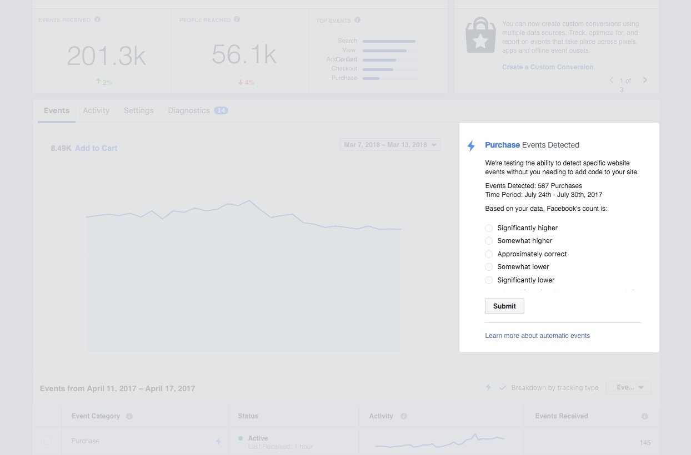
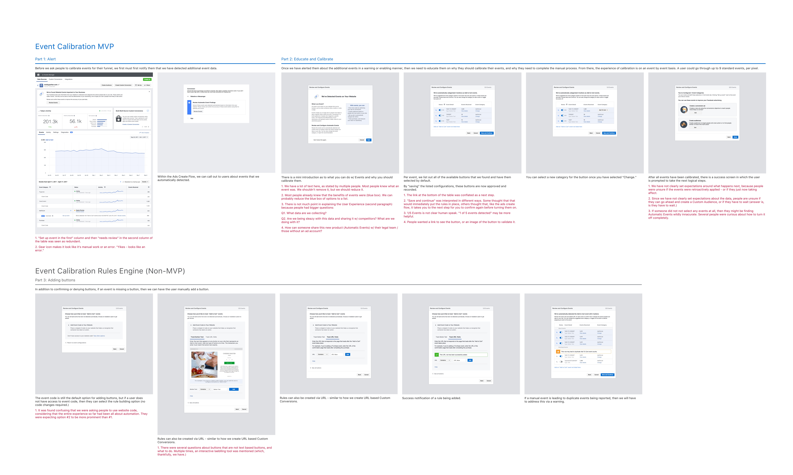
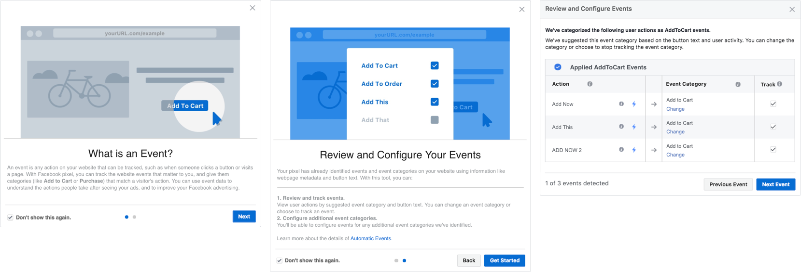
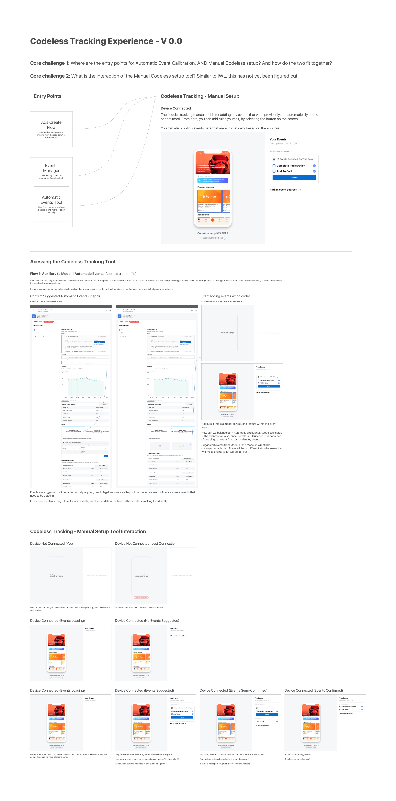

Taking the code out of the data setup process.
We made a radical move to ditch a manual code setup process and and automate the process instead. As the design lead, I led our users, and our team, to a code-less experience.
Role: Team Design Lead
Goal: Increase the amount of accurate events sent by enabling marketers to send their data without having to write any code.
Timeframe: July to December, 2017 (H2)
Marketers rely on customer data from visits to their website and apps.
However, sending this information back to Facebook requires complex code to be placed throughout your site, making marketers reliant on developers and product release cycles.
This sequential flow shows that across two key steps, for all data sources (app, website, offline data), developers were a core part (and burden) within the process.
The user experience was a standard mix of code snippets and videos.
“Even if I was able to get this [placement of code] prioritized and built - we are in a code freeze until the end of the quarter for holiday shopping. My data will still be incomplete until the second week of January.”
- Best Buy Marketing Operations
Events and parameter data are the the crucial missing link that completes the picture of a customer’s journey. Without it, retargeting, optimizing and measuring the impact of your ads is not possible. Despite wide adoption of the pixel tags throughout advertisers sites, 40% of the data sent is still found to be inaccurate, which has a direct impact on the optimization of marketers ads.
In order to hit our business goals, and meet the high skepticism that comes with automating a process that handles sensitive data, we focused on three specific goals.
These goals were set not just in order to hit our teams metrics and solve the user problem, but also to build trust with the sales and support teams that ultimately answer to any customer friction.
Because machine learning in this field, and team, was so new, skepticism had to match with a measurable indicator of trust from marketers. We wanted to get feedback from advertisers before the machine learning predictions were ready to be applied. If we were to wait for the model and the interface to be ready and built, we risked going without advertiser feedback for over a quarter - so we stepped in earlier.
By working with our engineers to show our advertisers a sample of the model results, we were able to learn not more about the data, but exactly what in the data advertisers were looking for when evaluating accuracy.
Despite people asking for a large amount of control and granularity, their reactions to the prototype actually contrasted this sentiment. We discovered this in two ways:
In addition to this, we also gained valuable feedback of how this suggested data, fits best into their workflow.
After working out a framework for measuring perceived accuracy, we went forward with rolling out the model incrementally. By rolling the model out to one cohort at a time, we were able to collect feedback and correct the model based quickly.
Our first feature was actually not really a feature - it was a survey.
After we distilled what metrics were important to measuring accuracy, we set out to design a tool that allowed users to control what parts of the automated data should applied.
By putting a an interface to a predictive machine learning model, we got the chance to see what people did and did not expect in terms of control. Protoypes of the controls the flow that went with it were put through various rounds of testing with feedback distilled screen by screen, as we trimmed down functionality for an Alpha release.
Initial research with a series of prototypes with realistic data gave us the level of fidelity that we were looking for.
With the control aspects defined in the previous round of research, we knew to focus on providing a simple tool that gave high level feedback and control.
This level of fidelity allowed us to move quickly and launch an Alpha as an interstitial (simple modal).
After a successful alpha and public rollout of an MVP, we are now setting our sights on a visual version that allows people to see exactly how their web and app buttons are being categorized.
We are now working towards a visual representation of this automatic data, as seen in the prototype here.
Initially, this concept was met with a lot of concern within Facebook for removing user control from a data-sensitive process. In the end we broke down the stigma, automated a manual process.